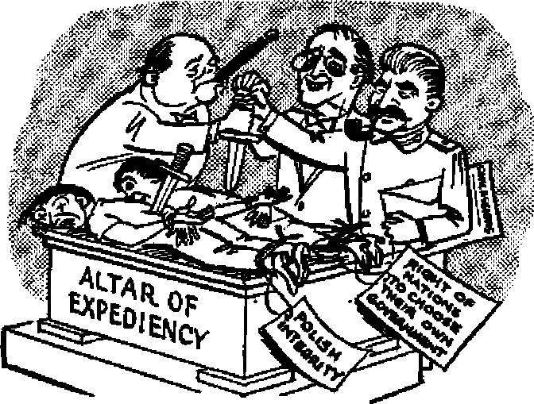
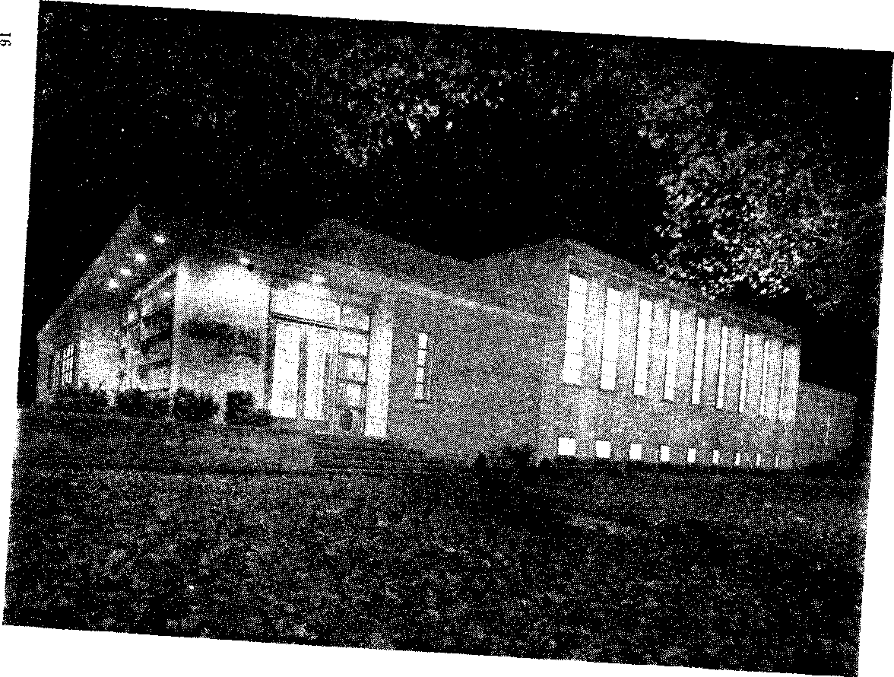

Is there really a Devil? Can you prove your answer?
What happened? how? and with what result?
How it affects you
Officials cannot censor doctrine!
JULY 8, 1955 SEMIMONTHLY
THE MISSION OF THIS JOURNAL
New* source* that are able to keep you awake io ths vital toaues of our times must be unfettered by mnsorship and selfish Interests. “Awoke I" has no firttere. It reoognizei facte, faces facto, to free to publish facts. It to not bound by political ambitions or obligations; to to unhampered by advertisers whoee toes must not be trodden on; It to unprejudiced by traditional creeds. This journal keeps itself free that it may speak freely to you. But it does not abuse its freedom* It maintains Integrity to truth.
“Awake r* uses the regular new* channels, but to not dependent on them. Its own correspondents are on all continents, in scores of nations. From the four corners of the earth their uncensored, on-the-scenes report* come to you through these columns. This journal's viewpoint is not narrow, but to international. Ji to read in many nations, in many Languages, by persons of all ages. Through its pages many fields of knowledge pass in review—government, commerce, religion, history, geography, science, social conditions, natural wonders—why, its cover* age to as broad as the earth and as high as the heavens,
"Awake I” pledges itself to righteous principles, to exposing hidden foe* and subtle dangers, to championing freedom for all, to comforting mourner* and strengthening those disheartened by the failures of a delinquent world, reflecting sure hope for the establishment of a right* cous New World.
Get acquainted with ‘ Awake 1” Keep awake by reading ‘Awake!'*
Pt'Bi-iaHMD StMJHOnT&L’T III WATCHTOWER BIBLE AND TRACT SOCIETY, INC. LIT Adama StrMt lirooklxn 1, N. U. S A.
N. H. Ktfcu, J’rttUtenf Qml SuItii, 8 w At ar?
Printing ttiia 1,460,000
LmHUM '■ thk M paNhktf;
£ie»LiKaUOr Aliikuiif, fiCiit, (lintisti, Frandi.
HollmdHi. Ncrwectirt. frulrt. Swrti* Moatiilr—THnkb, Urvtlt. Pat«w>«, Utotlotka.
SSeet (tx.f MrtHcrtptiiNi r«>
AMTHA U.l. 11T AdUM ft. Bntklrti 1 IO. Jl Aartrtila, ll Fmtrerd U , PLrtUiCrld N.B.ff. «/■ CmMi. 40 Irwin **»., Tral* 5 Qntvla *1 EmUx4, 34 Ct>thi TemOt. Lrtto Vf I ’/ s*w uro. not jo. ifeutarca, c : ?/. $«Vft Airta, FrlTt> Bta, EliodiffgtitrLa. Tri 7/-
rivc carta a copy
RwiittaMu diniM N **l 4c offlot ia Ttnf '*»'■ m lit trepiiiiwa wilt TvrulitiiiH u cwMitt Fth drilttry rf awnty RrEstu*m» m ntftpud t’ SHtUjn ft'Oi cMntriH wtwre n< cfk« 11 b> ■**> flj-jft eelj. Swbwrlpax
rile* » «»’rct r»Ln*.ri* in >r*i Lr local ourreoer NttiH of ixakttlta iwitji renew*! tJuiJ i went *t km tat Iwaw brfiH wfcterlptioti «
Xr»i Otani ■< Hdmt ■!»> irm tc onr ofirr ■tf t* eip«M efectiTt wIittD <xk bmUj. Srui year all it well m fddrrw.
Krtenl M HCtncbdiw v.wtMr V Bnatin. 5" T A*t Kirrt Prltttff la L' K A
CONTENTS
*Hie Devil in the Age of Reason
Visiting the Charming lowlands
Serene Dignity of Pittsburgh Office
Judicial Regard for Religious Rights
Catholic Hate Toward Protestants
Atomic Radiation
Continual Exposure and Modern Hazards
Jnvest/gaiors Report on Comic Booka “Your Word Is Truth”
Jehovah’s Witnesses Preach in All the Earth-France
HOW many of your personal preferences are based, not upon solid facts or carefully weighed decisions, but upon the ballyhoo of advertising executives and public relarions men? Before getting angry at the suggestion that ether people may be molding your mind into their ways cf thinking, read on to see how they work. Understanding their methods of operation may aid you to protect both your pocketbook and your rights to independent choice, emotion and action.
First, there is the matter of direct advertising. In New York, Hong Kong, Karachi or Maracaibo, yes, practically wherever you go in this jingie-plagued, slogan-berid-den world you are hounded by a particular sponsor’s products. Now, it is obvious that manufacturers must sell their products in order to stay in business. It is also argued, with logic, that advertising benefits the consumer, because when more people buy a good product it can be produced in larger quantities and should be available at a lower ccst, and also because the manufacturer must stand behind the quality of his advertised brand name. But understanding a few of the tricks of the advertiser’s trade can help you to exercise a sometimes thoroughly needed self-protection.
Psychologists and sociologists are busy probing the public mind—your mind—to discover how you can be persuaded to take up new buying habits and consumer customs. Probably few people today would fall victim to the classic extreme: “So that by using this Tobacco Persons may never come to wear spectacles.” But apparently many were victims 'of one cigarette manufacturer’s claim that he had definitely proved all other brands were more irritating than his. He had made a test with rabbits. Smoke from his rivals’ cigarettes made their eyes water, while smoke from his own did net bother them. He had a good thing until his rivals conducted their own test with a different set of rabbits.
Earle Ludgin, chairman of the board of the American Association of Advertising Agencies, explained that many college students of our day think they have grown past being influenced by advertising, that “advertising is for crazy, mixed-up high school kids.” But these self-satisfied students probably are far greater victims of various publicity schemes than they realize.
They may be more Intelligent than to be taken in by the “bait1* advertising over radio and television—advertising that offers you a vacuum cleaner, a sewing machine or storm windows at a fantastically low price by a company whose salesmen will then high-pressure you into buying, not the advertised product, but a far more expensive one. Also, they may not believe that chewing gum will relieve the frustra-
tions of impoverished coal miners, as one .series of comic-strip-type advertisements that were run in a poor coal-mining area implied.
But do these students eat more bacon since an enterprising public relations counsel for the meat packers sprinkled the newspapers with encouragement from doctors who suggested that people should eat bigger breakfasts (which, in the United States, generally include bacon and eggs)? Do they use two decks of cards to play canasta or three decks to play samba because card manufacturers pushed these games that sell two or three decks of cards where they sold only one before? The games are interesting, yes. A product must have some merit before advertising will make it popular. But frequently it is the pressure from advertising or publicity men that makes it an outstanding success.
A prime example of such a publicity campaign was the one sponsored by the Cigar Institute of America. The 27,000 pre-World War I cigar manufacturers had dwindled to something like 4,000. Women protested against cigars' “vile smell.” In moving pictures a cigar in his mouth was the trade-mark of the house detective, the gangster or the political racketeer. The cigar’s popularity rating was low; the industry almost collapsed.
Then in 1940 the cigar makers began a very subtle, but widespread promoticn of their product. Word was discreetly spread that cash prizes would be given for the best published newspaper pictures of people smoking cigars. Promptly the pictures began to turn up in the papers. Churchill, Roosevelt, Douglas MacArthur and Babe Ruth’s names were mentioned in connection with cigar smoking.
But what about the movies’ use of cigars? Pleas that Hollywood quit putting cigars in the mouths of its villains did no good. But then, according to Keith Monroe’s article in the February Harper’s magazine, the Cigar Institute’s manager stormed movie magnates with the proposal : “Whenever you make a mevie with a good cigar scene, I’ll put posters advertising it on 25,000 cigar counters across the nation. Free of charge.” Free publicity is a good thing in any industry. Tyrone Power in “Blood and Sand,” Gary Cooper as Sergeant York and the life story of George Gershwin were wreathed in cigar smoke. In “Saratoga Trunk” Ingrid Bergman said: “A house isn’t really a house unless it has about it the scent of a good cigar after breakfast.” Cigar sales went up. So did movie attendance.
Cigars were given as presents on radio shows and as gifts from service clubs ar.d lodges. There was newsreel coverage of them being given to Lord Mountbatten at the time of Britain’s royal wedding. They were becoming more popular and the prejudice Was melting. The Harper’s article estimated that in three years alone 1,500,000 more American men have become cigar smokers. Maybe this propaganda “hasn’t changed your mind about cigars,” it said, “but it has certainly changed a lot of other minds.”
Such public relations campaigns are not uncommon. Across every editor’s desk passes a flood of releases that people hope he will print. Some of this information is of considerable value. Much of ft is totally worthless. How can you protect yourself from what you do not want, while benefiting from what you do? The simplest way is to stop, look, listen and think! And knowing of the efforts of those who would like to mold your mind into their way of thinking will help you to defend yourself from them.
The Age Of Reason
What has happened recently to the Devil? Where is he? Has "the age of reason'* completely vanquished him? Or is he present in another guise? Who is the Devil? Is he the mere personification of evil, the symbol temptations of fallen man? Or Is he a real, living personality? This article answers.
THROUGH most of human history the
Devil was real and personal and his evil influence was within reach of every man. He was the arch foe of God and man, the enemy pf all good and the source and promoter of all evil. Men feared his treacherous snares, wiles and devices. He was the god of this system of things, the prince of darkness, transforming himself into an angel of light. Men called him by various names: the Tempter, the Evil One, Beelzebub, the Prince of Demons, the Dragon, Satan the Serpent. To them he was real, living, a distinct personality.
However, in recent years Satan has become a nonentity. Modernists and rationalists have relegated him to the realm of myth. Reason, say they, rules out ajl possi-bility'of there being any Devil or demons and for that matter any God or angels. These are superstitions that belong to “the age of ignorance.’1 The denial of the personal Devil was the first step in the denial of “sinfulness of sin/’ It cast doubt and vagueness about there being a personal God. The Almighty began to be referred to as an impersonal Force. Angels were debunked as superstition. Jesus became just another man who died a martyr’s death. The thought of a personal Devil is dismissed by most people with an incredulous smile. To the vast majority he is but a joke. Said a Sunday-school teacher: “Men are the only devils,” and he challenged four clergymen to a radio debate to prove otherwise.
Reason for Skepticism
By making men believe that Satan is not, he has them just where he wants them— completely duped. That modem man should take a skeptical view regarding the existence of Satan the Devil is not at all surprising when we consider how vague are his ideas regarding the existence and personality of the Supreme Being and how weak is his faith in the Bible as God’s inspired Word. Even among those who in no wise doubt or dispute the existence of a personal Devil, there remains a veil of ambiguity about a multitude of questions concerning him: Who he is, what he is like, how he became the Devil and why he has not been destroyed by an all-wise and loving God. The common view held by most religious persons is the same as that taught in mythologies and depicted in ancient art.
Among the ancients good and evil were always at war with each other. In Babylon this conflict was represented in “the lady Nina” and the dragon Tiamat; in Egypt by the serpent Apap; the Titans and Prometheus in Greece; Hei and Loki among the Teutons, and Ahi and Siva among the Hindus. The Aztecs, the Assyrians and the ancient Chinese ah believed in devils. In the Buddhist scriptures the devil Mara appears at the head of an army of demons with “bodies of flame . .. with the skin of oxen, asses, boars .. . spitting snake venom—and swallowing balls of fire.” The Mohammedans believe the Devil was an archangel, whom God “employed to destroy the jinns or genii, a race intermediate between men and the angels, who tenanted the earth before the creation of Adam?’
During the first four centuries of our era all representations of the Devil appear to have been that of a serpent tempting Eve. During the Middle Ages artists depicted him as a serpent with two heads, one looking at Adam and the other at Eve. Then as a three-headed god, each head devouring one of the “damned.” In old works of art the Devil is given the same form as his imps, half man half beast, and furnished with a tall and horns. The wings of a bat, a cloven foot and a great pitchfork, with which he casts “Jost souls in a flaming hell/’ are often added to increase the Satanic hideousness. Artists of the German Renaissance were fond of giving the Devil a crow or raven form. Besides these impersonations Satan has been portrayed as a wfid boar, a he-goat and a monkey. More modern conceptions are the Devil in the form of a young gallant or a young girl. All such representations are purely imaginary and contrary to all Bible truth. In no small way have these misrepresentations been influential in causing many to cast aside the thought of there being a personal Devil. It tends to stamp the whole teaching as a ridiculous fairy tale.
Denis de Rougemont, a Swiss Protestant, in his work The DeviVs Share, says: Satan’s “first trick" is his incognito. “God says, T am he who is? But the Devil... says to us, like Ulysses to the Cyclops, ’My name is Nobody. There is nobody. Whom should you be afraid of? Are you going to tremble before the non-existent?’ . . . Like the Cheshire cat in Alice in Wonderland, the Devil has in our day completely disappeared, leaving only a grin hovering in mid-air which is imperceptible to people in a hurry. . . . The Bible proclaims the Devil’s existence on every page. . . . But who in a world, where people believe in newspapers, still seriously believes in the Bible? It Is a fact that modem man experiences less difficulty in lending faith to the lies of the day than to the eternal truths transmitted by holy books. . . . Satan . . . chooses to don a grotesque appearance which has the sure effect of making him inoffensive in the eyes of educated people.. .. And so the Devil has them precisely where he wants them, ... He vanishes in his success and his triumph is his incognito." And as Baudelaire declared: “The Devil's cleverest wile is to make men believe that he does not exist.”
More Reasons to Believe
However, one who accepts the marvels of the universe as proof of the existence of an invisible, personal, intelligent Supreme Being should have no difficulty in making room for the belief that that One could create invisible creatures as well as visible ones. And if we accept the Bible as' God’s Word of truth, we have no alternative but to recognize the existence of a personal Devil. Throughout its inspired pages, the Bible speaks of a spirit creature that was perfect and upright “till inquity was found" in him. Unlike mythological representations the Bible tells us that he was beautiful and brilliant. “Thine heart was lifted up because of thy beauty, thou hast corrupted thy wisdom by reason of thy brightness.” It was after his rebellion to become 'like God’ that he was known as
Satan, Devil, Serpent and Dragon.—Ezekiel 28:12-19; Revelation 12:9.
To refute the absurd claims that the Devil is merely a principle of error or a personification of evil, the Bible describes the Devil as conversing with God in heaven and afflicting men on earth. It speaks of him as quarreling with Michael over the body of MCees. A principle of error could not do such things. Revelation chapter 12 tells of a war In heaven wherein Michael ousted Satan from heaven. If Satan is fleshly temptations he would never have been in heaven, for the Bible states specifically that 'flesh and blood cannot enter heaven.’ If the heavens here are the political heavens or rulers of earth, and Satan’s ousting represents evil purged from human governments, as some claim, then this should have brought joy and happiness to men, whereas Satan's ousting meant "Woe for the earth and for the sea, because the Devil has come down to youl”—Job 1:6-19; 2:1-7; Jude 9; 1 Corinthians 15:50; Revelation 12:12, New World Trans.
How could an abstract force of evil expel itself from a person ? Jesus and the Jews had no such abstractions in mind when they were discussing the demons and the ruler of the demons, Satan. “If Satan expels Satan, he has become divided against himself: how, then, will his kingdom stand?” To say that when we entertain a sinful thought we have a devil in us, or that when another person makes a temptation for us he is a devil to us, is to say our fight is solely against blood and flesh. Paul, however, makes a specific distinction between fleshly temptations and assaults by invisible Devil and demons: “Stand firm against the machinations of the Devil; because we have a fight, not against blood and flesh, but against., . the wicked spirit forces in the heavenly places.” This is a specific denial that the struggle is solely with fleshly temptations.—Matthew 12:24-27; Ephesians 6:11,12, New World Trans.
A Real Personality
James speaks of the demons believing and shuddering. An evil principle or a mere abstract influence cannot believe or shudder. Not even an animal can believe. It takes an intelligent personality to believe in God. Jesus was tempted by the Devil. It is inconceivable that those tempting Thoughts originated in his perfect mind and loyal heart. The impure suggestions must of necessity come from without. Note especially the third temptation: “Again the Devil took him along to an unusually high mountain, and showed him all the kingdoms of the world and their glory, and he said to him: ’All these things I will give you if you fall down and do an act of worship to me.’ ” It challenges all reason and intelligence to say that Jesus, a perfect man, was carrying on a conversation with an imaginary person. How could such imaginary person or evil thought offer all the kingdoms of the world to him? How could he bow down and worship an imagi’ nary force?—James 2:19; Matthew 4:8, 9, New WorZd Trana.
In want of proof to support their feeble arguments, some have charged that this is “a proof of the limitation cf knowledge” of Jesus. Schleiermacher thought that Jesus accommodated himself to the Ideas and language that then prevailed in Judea, but did not himself regard Satan as a real and living person. But certainly this Is beneath the dignity of the Son of God. Would he have made use of such strong language, and bid his disciples to beware of the Devil’s craft and power, if he believed that he did not exist? Let us be reasonable in this “age of reason.” In the exposition of the illustration of the tares Jesus makes the stateinent that the enemy who sowed them was the Devil. Satan is also spoken af as possessing power to think, intelligence to plan and as being a proud accuser. Surely all such references indicate personality.
Evil Organized by Wicked One
Religionists contend there is no personal Devil, to avoid the appearance that God created a wicked spirit creature. They fail to understand that the one now Satan was created perfect but turned bad, being a free moral agent. According to their reasoning, they should not believe in a personal Adam, since he was wicked. Created perfect, he turned, bad himself, as did the Devil. God did not create murderers, adulterers, thieves or liars, yet the world is filled with them. As man corrupted his way upon the earth, so the Devil in the invisible realm corrupted his way.
However, not all sins or temptations come directly from the Devil or one of his ministers of evil. Once sin entered the world, the very weakness and waywardness of the hearts of dying man would have had enough of lust for wrong things to produce evil results. But in that case the evil would clearly have been far less than what it is now. Satan does much more than merely add a further source of temptation to the weakness of the flesh. He combines and intelligently directs all the elements of evil to a wicked end. It would be bad enough if all evil were acting apart and without any definite purpose or design, but the hazards are immeasurably increased when all may be organized and directed by vigilant and hostile intelligence. It is this that makes the apostle Paul say: “Put on the complete suit of armor from God that you may be able to stand firm against the machinations of the Devil.”—Ephesians 6:11, New World Trans.
Reason dictates that for every effect there must be a cause. Consider, if you will, the combined evils of this generation without attributing their cause to some supernatural hostile intelligence and you are left nowhere. Consider for a moment the inhuman industrial oppression of men, women and children whose desperation found expression in the horrors of communism, socialism and anarchism; consider the debasement of all standards of morals and conduct; consider the rise in atheism, agnosticism, infidelity; consider the world wars with millions of men dying by all the horrors contrived by secular genius; consider the flame thrower, the concentration camps, the salt mines and the gas chambers; consider the buzz bombs, the atomic bombs and the hydrogen or heli bombs; consider governments physically oppressing and destroying millions of the people in whose interests they were established to govern. Do you think all these perpetrated evils came about by their own accord, that sinful man longing for peace and happiness is capable of such gross wickedness against himself?
“Come now, and let us reason together, saith Jehovah.” Let us be reasonable in this “age of reason” and own up to the truth. God says these evils are the machinations of the Devil. Since we have no better answer let us at least be reasonable enough to believe Him. He promises that soon now at Armageddon he will abyss Satan the Devil and with that will come peace to our earth. “For his part, the God who gives peace will crush Satan under your feet shortly. May the undeserved kindness of our Lord Jesus be with you.” —Isaiah 1:18, Am. Stan. Ver.; Romans 16:20, New World Trans.
Poverty and shame shall be to him that refuseth instruction: but he that regardeth reproof shall be honoured.
—Proverbs 13:18.
THE YALTA PAPERS
THE Yalta conference, a 1945 meeting between United States President Roosevelt, British Prime Minister Churchill and Russian Premier Stalin, has proved to be one of the most controversial meetings of heads of state ever held. What happened at Yalta? At Yalta Stalin set his price for fighting Japan; Germany and Poland were divided; and Russia was granted Asian territory, got two extra votes in the United Nations and arranged for huge postwar payments from Germany.
When, last March, the United States State Department released its records of this conference, reverberations were heard around the world. But Republican Senate leader William F. Knowland said: “If the disclosures discourage two or three nations from thinking they can sit down behind closed doors—with no responsibility to their elected representatives and to the people—and proceed to parcel out nations and people without their consent, they will have served their purpose.”
Commentators say that under the crucial war conditions of February, 1945,
it is understandable that concessions might be made to Stalin to assure his help in achieving victory, but the particular concessions that were made amaze them. One critic of the Yalta agreements said in a March 9, 1945, editorial: “Clearly we may all agree with the objective—world peace—and yet disagree with the system of personal and private conferences whereby three men carve up European territory without allowing the corrective influences of public opinion to be operative and without, indeed, taking the people into their confidence on the reason why pledges solemnly given already during this war are casually, if not flagrantly, disregarded by our allies.”
The chief victims of the decisions made at Yalta, of course, were Poland and China, Neither was represented at Yalta, neither had an opportunity to speak, but what happened there had a considerable effect on both of them going into Communist captivity. The Yalta papers show a definite disregard for the rights of weaker nations. U.S. News c€ World Report called the agreements “the flagrant denial of a great principle—the right of peoples everywhere to establish governments of their own choosing.”
The Major Decisions
These are the points that were agreed upon at Yalta:
Germany was to be dismembered and disarmed. France would get an occupation zone carved out of the United States and British zones, and would become a member of the four-power Allied Control Commission.A reparations commission would be set up in Moscow to exact payment from Germany for war losses.
For entering the war against Japan, Russia was to receive In the Far East the southern half of Sakhalin Island and the Kurile Islands. Also, the port of Dairen would be internationalized, giving Russia a warm-water port in the Far East, and the Soviet lease on Port Arthur (which the Russians wanted for a naval base) would be restored. Further, Russia would share jointly in the eastern and southern Manchurian railroads.
The Russian boundary of Poland would be moved some 120-160 miles west of its former position. For this loss of territory the Poles were promised “substantial accessions of territory in the north and west" at Germany’s expense, Stalin promised free elections after the war, but rejected international supervision of these as an affront to Polish sovereignty.
Also, plans were laid for the founding of the United Nations, including the granting to the Soviet Union of extra votes for its Ukrainian and Byelorussian Republics, an act that would be somewhat similar to granting separate votes to the United States for the states of Texas and California.' The United States’ proposal for a great-power veto in the Security Council was approved, thus making possible the creation of the U.N., but also making it impossible for the Security Council to put any real restraints on the only countries capable of world war.
Concessions Made
One of the amazing things about this conference was the ease with which concessions were made. Roosevelt was not in a haggling mood when he met with Stalin to consider the Soviet request for Far Eastern territory. The minutes report: “The President said... he felt there would be no difficulty whatsoever in regard to the southern half of Sakhalin and the Kurile islands going to Russia at the end of the war." There was some problem about whether the Chinese should be consulted regarding Dairen and the Manchurian railroads, but “Marshal Stalin said that it is clear that if these conditions are not met it would be difficult for him and Molotov to explain to the Soviet people why Russia was entering the war against Japan. . . . They could not understand why Russia would enter a war against a country with which they had no trouble.” Stalin got his way, though his entry into the war was too late to be of any military consequence.
The ease with which other decisions to divide up or to try to rule the world were made was indicated by Churchill’s objection to the pressure for a firm decision on the postwar dismemberment of Germany. He said that the fate of eighty million people could not be decided in eighty minutes. And when Roosevelt had thought that the conference could be completed in five or six days, Churchill had said that, if so, some subjects would have to be discussed in advance. “I do not see any other way of realizing our hopes about world organization in five or six days,” he explained.
Poland Divided
The big problem surrounded Poland. Time said: "Serious consideration of postwar Germany could be postponed. The Fai-East could be settled by thrusting concessions upon Stalin. The deeply symbolic differences in the U.N. Charter could be bridged by words never destined to health e stress of reality. But Poland was immediate and concrete, already the subject of angry public debate.”
One of the major criticisms of the Yalta conference has been its handling of this E’olish problem. The recently released reports show how ideals were freely bartered away on the altar of expediency. In the Atlantic Charter the United States and Britain had emphasized the right of all nations to choose their own governments. But this right of self-determination was not granted to Poland. Even further, the arguments against Russia's claims in Poland were not based upon the high principles of self-determination for even the smallest state, but the official papers show that Roosevelt‘simply begged Stalin not to embarrass him before the Polish voters of the United States. “There are six or seven million Poles in the U.S.,” he said. “It would make it easier for me at home if the Soviet government would give something to Poland.” Stalin’s interest in Roosevelt’s popularity is doubtful. Stalin’s argument, however, was on a similar level, namely: “What will the Russians say?” Without the Polish territory, he said, ‘I cannot return to Moscow.’
Churchill, in a similar vein, was concerned about the political difficulty that would be faced in Britain over the mass deportation of Germans from the area given to Poland, "I . . . feel conscious of the large school of thought in England which is shocked at the idea of transferring millions of people,” he said. Stalin countered: “There will be no more Germans there, for when our troops come in the Germans run away, and no Germans are left.” Stalin got the territory.
The fact, however, is that the Yalta agreements did not give Stalin this land; he already had taken it. His gain was political rather than geographic. The Russian armies had already set up a government that represented the Communist party, the Russian secret police and the Red army. But the action of the Western powers tn throwing the principles of the Atlantic Charter overboard and agreeing to what the Russians had done probably proved a strong factor in preventing dangerous resistance to the new Communist regime. And if the Poles could not count on the West, could Hungarians, Slovaks, Bulgarians, Rumanians and Czechs? The Communist grip on all tightened.
Storm of Protest
When the Yalta papers were about to be released last March, Sir Anthony Eden, the then British foreign secretary, sent a message to Washington deprecating the publishing of a detailed record of international conferences so soon after the event. Churchill himself said: “If this became the established practice, it might hamper the free exchange of views at future conferences.” However, the well-known Manchester Guardian Weekly said editorially: “The British Foreign Office is making itself slightly ridiculous by standing in the way of publication in the United States of the record of the Yalta Conference. It is, of course, only following its old stuffy rule which attempts to hide all documentary facts from the historian until fifty years after the event.” And at least one U.S. senator thinks “a useful purpose will have been served if every official who participates in negotiations realizes that he has an ultimate accounting to the people and that his decisions will have to stand the light of history.”
While conditions are far different now from what they were when the Yalta conference was held in 1945, and while it is easiy to look back now and see what mistakes were made then, still the Yalta conference has been termed “one of history’s major tragedies.” The newly published
Yaita papers do ndt add a great deal of information to what was already available through other published accounts of the meeting. But they do show much more of the spirit of the meeting. And their publication impresses upon our minds a statement made in a cable that Churchill sent to Roosevelt shortly before the conference: “At the present time I think that the
END OF THIS WAR MAY WELL PROVE TO BE MORE DISAPPOINTING THAN WAS THE LAST.”
His prediction proved to be true.
OPERATION SQUIRREL TRAP
■BN THE sweep of the White House back ill yard there is a putting green, President Ml Eisenhower uses it to practice golf. Also using the lawn to play are the White House squirrels, A tragic thing sometimes happens: these gray squirrels, on occasions, undermine the proficiency of the president's putting. Recently, Senator Richard L. Neuberger, democrat, rose in the Senate and sadly told his -fellow lawmakers that the president "is hav- * ing the White House squirrels caught in box traps and carted many miles away from the White House because they have been scratching his putting green.” The senator continued: "I strenuously protest this undertaking. I urge the president of the United States to cease and desist before he does permanent and irreparable damage to an American tradition.”
< Next, Senator Al ben W. Bark- *
ley, democrat, rose to ask nature-loving legislator Neuberger whether it would be "inappropriate” to paraphrase a Biblical quotation: “Foxes have holes, and birds of the air have nests;, but the son of man hath not where to putt" Barkley followed with another inquiry: whether the banishment of the squirrels was due to mutilation of White House lawn or whether, “according to their habit, they are seeking to bury some of the 'nuts’ which have been brought to Washington recently?’
t
White
litical ened: White closed
41. As the squirrels were being turned into popawns, the question naturally height -Who ordered the deportation of the House squirrels? Finally, It was dis* that the ground keeper originated the idea of banishing White House wild life after President Eisenhower had voiced some sharp comments on the squirrel’s persistent digging. Said press secretary Hagerty: "When the president says something we try to respond." 41. And respond the government did! First, an electronic expert was summoned. He proposed high-pitched sounds to drive the squirrels off the putting green. This plan failed. It seems that Washington squirrels were used to high’ pitched sounds. The army signal corps next made a tape recording of repellant noises. This terrifying sound blitz never fazed the squirrels, who kept right on puttering on the president’s putting ground. In sheer desperation the government obtained some box traps. Victory at Jasti Three squirrels were captured and carted away in trucks to exile in West Virginia.
"There will be no more trapping," said the
House press secretary after the story reached the newspapers. Why? Could it be the expense? Not likely. Could it be that the operation was not success ful? Possibly, because newcomers can easily move in from adjacent areas to replace the exiles. At any rate, activity on the White House lawn went back to normal—for the president and for the squirrels.
//? Ilethzriart
A DREAM assignment! A job where you could mingle play with work! A task that knows no monotony! The most difficult part about such a job is that usually it does not last long enough. But it has been my joy, short-lived as it was, to do such work. You see, I am one of a group who will be traveling in Europe this summer, and have had the privilege of being sent out as a scout to find out what this group might be able to see while they are in Holland. Come along with me as I tell you about the places I visited.
First, my plane landed twelve feet below sea level at the bottom of a lake. Do
not be alarmed! A hundred years ago this lake was enclosed by a system of dikes, and then the water was pumped out and the bottom of the lake was turned into productive land. In a corner of this lake bottom the Dutch government built an efficient airport that has since become one of the crossroads of the world. Thus, air travelers land on the bottom of this lake.
Arriving at night, I traveled the thirty miles to The Hague, the site of one of the international conventions of Jehovah’s witnesses that will be held throughout North America and Europe this summer. My hotel was situated on the terrace facing Scheveningen Beach, where many international travelers and vacationers converge. Through the open window of my room there came a gentle cool breeze and the sleep-inducing rustle of the North Sea waves. The hotel was a middle-priced one, costing $2.25 a day, with private bath and breakfast included. Fair rooms can be had as low as $1.05 a person, without private bath, though a few of the elite hotels run up to $6 or $7 a person each day. In these hotels, as well as in restaurants in Holland, tips are usually included in the price charged, so that no other tip is expected or required. One common fear in hotels, that the rooms may not be clean, does not exist here.
Early the next morning I made my way to the HoutrusthaUen, the site of Jehovah’s witnesses’ forthcoming “Triumphant Kingdom” assembly. This hall is a low building of brick, concrete and steel, and much of its roof is glass. It is square, measuring about 325 feet each way, and covering roughly 2.5 acres. It could easily seat 15,000 people. To the left is a large playing field, and to the right are beautiful grounds covered with low evergreens. The broad road at the front, the neat gardens and clean facade form a pleasant, silent “Welcome!” for its visitors.
After seeing this assembly hall I made a short tour of the city. Called The Hague in
English, its official Dutch name is ’b Graven* hage (sKrah’vunhah.Kuh), a name derived from its originally being “the Count's hunting ground/’ Here Count Floris IV of Holland built a stronghold in 1229, and from this nucleus the city has grown to Its present size. In the “Inner Court” various government buildings are to be found, along with the historic Hall of Knights, Wit about 1280. Here many governmental matters are still discussed and settled. Nearby are stately mansions that silently bear witness to the wealth and splendor of this city in times gone by. In the "Maurits-huis” Royal Picture Gallery are many fne works of the famous Rembrandt. Walking along Parkstraat, I crossed a bridge that spans one of the city’s canals. Then to the left, on a side street called Zeestraat at No. 65b you can see the largest painting in the world, the Mesdag Panorama. I’his huge painting on canvas, 46 by 400 feet, depicts the fishing village Scheveningen in 1881, and is indeed a unique exhibition of art.
From here it takes only a few minutes to get to the Peace Palace, completed in 1913 from funds presented by Andrew Carnegie. It contains valuable gifts from many countries. This building of fine architectural style is the seat of the international Court of Justice and the Academy of International Law. After visiting these places I walked back toward my hotel at rhe seaside, through the vast and beautiful park called Scheveningen Woods.
If a person has more time and energy, more places of interest could be visited. There Is the Municipal Museum; the Ge-vangenpoort Museum, a prison of the Middle Ages with its instruments of torture; the Planetarium and the International Press Museum with papers and books on presscraft from all parts of the world. Other visitors may wish to take a quick tour of a typical Dutch village by visiting
“Madurodam,” a miniaturj scale model of such a place. You will find it in Scheveningen Woods Park. Still others may wish to inspect the old city hall of the sixteenth century and the St. Jacob’s church that dates from the beginning of the fifteenth century.
Seeing More of Bolland
There are other parts of the country, too, that might be visited. Splendid and frequent train service and good bus transportation make it easy to get around. However. 1 chose a more expensive, but more efficient means of seeing the country: renting a small European automobile. For $6 a day I had the use of a four-passenger car. By traveling an average cf 120 miles a day sight-seeing, the additional cost of oil and gas amounted to about $6, which brought the total to $12 for the day. If four people did this you could have a pleasant day of touring for only $3 a person.
Within fifteen miles of The Hague are three other important cities that you might wish to visit Delft is famous for its blue pottery. Rotterdam, the great seaport, is making great headway in rebuilding out of the ruins of war. Leiden, the seat of Dutch learning, is known for its universities, libraries and fine museums. Some of the con ven tinners will likely have rooms assigned to them in these cities and will thus be able to see them.
A trip through the Dutch countryside is a refreshing experience. This fiat land, divided into neat rectangular pieces by the drainage ditches, presents an ever-changing patchwork picture in all shades of green, plus the yellow and brown of the ripening crops, and the white, blue and yellow of blossoming fields. Often you travel along stretches of the 1,500 miles of dikes that hold back the sea from the table-flat fields. Much of this land is below sea level. In fact twenty-five per cent of the country would regularly be flooded at high tide were it not for the system of dikes. Closely associated with the dikes are the 1,424 picturesque windmills dotting the landscape, many of which, to keep the waters at desired and safe levels, still actively flail their arms in earnest toil.
Amsterdam, City of 400 fridges
The “Venice of the North’* is what they call Amsterdam, and for good reason too. A glance at a map of the city, with its numerous canals and more than four hundred bridges, will readily explain the reason for this description. The easiest way to see Amsterdam is to get into a modem glass-covered boat, where, for less than 30 cents you can cruise for about an hour and a half past some of the most interesting sights to be seen here. Here, too, you may want to see the colorful shopping district in the Kal verstr aat, the Royal Palace, the National Art Gallery with its fine seventeenth-century paintings from the Dutch school, and the Museum of Biblical Archaeology at 137 Stadhouderskade.
Then, opposite the large and beautiful Vondel Park, at 1 Koningslaan is a building that will be of prime interest to Jehovah’s witnesses: the Netherlands branch office of the Watch Tower Bible and Tract Society. This four-story cream-colored building, situated in one of the finest sections of the city, seems to stand out even above the serene peacefulness of its surroundings.
Other Nearby Places
Some forty-five miles north of Amsterdam is the Afshcitdiflc or enclosing dam of what may be the largest project man has ever undertaken to reclaim land from the sea. Completed in 1932, this dike cuts through twenty miles of open sea. On one side of it is the surging Wadden Sea, and on the other side is the tamed former Zuiderzee (southern sea) now called IJssel Lake, With this body of water now being protected from the influences of the tides, and reduced to the leVel of the ocean at ebb, a great land area is being reclaimed. When the job is finished an entire province will have been wrested from the grip of the sea.
There are many ways of seeing this small country. One-day excursions by touring buses are very interesting and cost from $1 to Unique tours can be takvn on numerous waterways. And for 50 cents you can travel by boat to Volendam and Marken where various old Dutch costumes are still worn for the benefit of tourists.
It would be most unfair not to mention this country’s flowers. Everywhere in the cities are hand-pushed carts and sidewalk tents full of them. A housewife feels embarrassed when visitors arrive and she has no flowers for the table. The chief center of flower growing in Holland and Europe is Aalsmeer, a village eleven miles southwest of Amsterdam. Here hundreds of greenhouses dot the countryside, sheltering thousands of species of beautiful flowers. Every day except Sundays and public holidays flower auctions are held from 8:00 to 11:30 a.m., and visitors are permitted to attend these auctions and watch the proceedings.
During my pleasant trip I saw many other things that I could not describe in this shnrt space*, the magnificent castites De Haar and Muiderslot, the peaceful, quaint villages where life moves on very slowly, and during my trip I often thought of what an ideal place Holland would make for a sort of refreshing pause at the end of a busy European visit.
We in Holland hope that many of Jehovah's witnesses visiting Europe will be present at this assembly in The Hague, August 17-21, to assemble here with their Dutch brothers to the praise and honor of Jehovah’s name. Will you be with us?
:■/ M V' .it i
Serene Dignity of Pittsburgh Office
THE striking new building pictured at left was dedicated to New World Society activity last September 4. It is the registered Pittsburgh, Pennsylvania, address of the Watch Tower Society, and here the annual meetings will be held. Additionally, it serves as a Kingdom Hall for two Pittsburgh congregations.
The picture at left appeared on the cover of the December issue of The Charette, an architectural journal. The auditorium picture below was one of several that illustrated the interior design. Devoting several pages to this building, The Charette said: “Uninhibited by the staid conservatism of its neighbors, this handsome religious center states its undeniably contemporary identity.” After his own stock of this issue was completely exhausted, the editor offered these pictures to us for the benefit of all our readers. His kindness and interest are appreciated.
This hall is at 4100 Bigelow Boulevard in Pittsburgh. Visitors are welcome.
TEHOVAH’S wit-J nesses in Pomona, California, wanted to build a meeting place, a Kingdom Hall, on some property they owned.
The planning commission denied their application, and the city council approved the denial. The permit was refused because the city officials did not approve of the religious beliefs of Jehovah’s witnesses, though later they said the building of the hall would result in a traffic hazard. When the case came before Judge Walter S. Gates of the Superior Court- of California in and for the county of Los Angeles, he showed from other court decisions that objections on the ground of traffic hazard were untenable, and in his decision the weight of his argument bore heavily on the apparent prejudice of the city officials against Jehovah’s witnesses. Parts of his decision in favor of the witnesses are here quoted, as he handed them down on January 15,1953.
“The court must come to this unanswerable and inescapable conclusion, to wit: 'That each individual has a natural and inalienable right to exercise his freedom of conscience—and that his right to believe, profess, to practice, and to promulgate his beliefs are the very basis and essence of religious liberty.' If and when these rights to religious freedom are abridged or taken away from any one of our citizens, either directly or Indirectly or under the subterfuge of an exercise of a police power, that time will mark the starting or beginning point of our ceasing to be a democracy. Of all of our freedoms, each one of which is highly valued and very sacred—the richest and most priceless of all of them is the ‘right of religious freedom’—the right to worship according to the dictates of one’s own conscience. This right or tenet
is the one upon which our great nation was founded. It is the very center and heart of our American democracy, and it must not be destroyed. Stated in another way, religious freedom is one of the fundamentals, yea, the very cornerstone of our democracy and American way of life.
“Now returning to the admitted evidence in the instant case, the only reasonable, rational, or logical inference or conclusion that this court can draw from all of the evidence is ‘that the planning commission of the city of Pomona did not like, nor were they in accord with, some of the tenets or doctrines of Jehovah’s witnesses. ’ That in the early hearings held by the planning commission it was emphatically made to appear that the members of the above sect do not salute the American flag and are adverse to serving in the military forces of our country. With the foregoing facts clearly before them, the planning commission did not take kindly to the idea Of granting the petitioners a permit to erect their church. This was especially true when those facts were made to appear in the public hearings before said planning commission, petitioner’s principles, or concepts, according to the commission’s way of thinking, are and were un-American and not patriotic and should not be encouraged nor tolerated, the said commission did not take kindly to petitioner's request for a building
permit. Further, it believed, no doubt, that a group of people who believed in*or taught or promulgated such ideas as aforementioned, should not be assisted or helped— or even allowed the right to have a place of worship in the confines of the city of Pomona, Or, stated in another way, no organization of this kind or character, even though it be a church, should be afforded the right to erect a house of worship.
“With the foregoing inescapable conclusions clearly in mind, the court is now confronted with the following legal query or problem, to wit: Can a municipal body, such as the Pomona planning commission, or its city council, say that a particular religious group cannot, because of its established doctrinal beliefs (which beliefs appear to them, the commission, or to the city council, to be un*American and unpatriotic and inimical to the American way of life), be allowed the right to erect a house of worship? This is the paramount, important and basic question which this court must now decide.
“Therefore, phrased in another way, do the officers of a municipal body have the right and power to set themselves up as the judges of what is good, bad, patriotic or unpatriotic or un-American? . , .
“No person, even though he may be a member of the planning commission, or of the city council, or a jydge, is empowered to censor another’s religious convictions or to set bounds to the areas of human conduct in which those convictions should be permitted to control his actions, unless compelled to do so by public necessity which properly requires the exercise of police power.
“It seems to this court that those departments of the municipal bodies of our state who have the power and authority of granting permits to religious bodies for the erection of churches should not make it hard or difficult for such groups, even if such departments or governments do not agree with the religious doctrines of those who are seeking to secure permits for the erection of their edifices. This attitude or policy, if you choose to call it that, as used by the respondents in this case, seems to this court, in these perilous times, rather a dangerous one to follow. . . .
“It seems to this court that the rights of these various religious groups should be safeguarded and pxotected, that these organizations who seek sanctuary in and want to erect houses of worship in the various areas of our state and nation should each be afforded equal opportunity so to do. That it should not be made difficult and ihany times impossible for those people who want to erect churches in our various cities to follow their desire. In short, all religious groups should be treated in the same manner, even if those in power are not in accord with the doctrines or tenets or beliefs of or in sympathy with those who seek to erect church edifices in our community.
“As stated heretofore, it is not the right of any man or group of men to discriminate against any church or religious body because of its tenets of faith or otherwise—and this is true even though such discrimination be actuated by seemingly patriotic motives. It appears to the writer of this opinion that it would be much more patriotic and more democratic to see to it that those treasures of humanity—the above-mentioned freedoms—are carefully and securely safeguarded. It is extremely dangerous for governmental bodies or individuals to set themselves up as judges of someone else’s religious beliefs. Each of us has a right to his or her opinions and religious beliefs. We may not agree with another’s religious beliefs, and on the other hand he may not agree with our religious views. Nevertheless, no matter what a person's entertained fixed beliefs are
they should not act as a determinant in refusing an individual or group that to which it is legally and justly entitled, as the case may be.
"There is nothing in the doctrine or dogma of petitioners herein that in any manner, so far as this court has been able to learn, that advocates the overthrow of our government. It is, like many other religious organizations, numerically in the minority. As stated before, the rights of a minority are just as sacred as the rights of the majority.
“In conclusion, it is to be hoped by the author of this opinion, that the time will come when the American people will become so imbued and enamored of the great principles afforded by our Bill of Rights that they will become ‘democracy conscious/ and that courts will not be called upon to pass upon contentions involving religious or racial discrimination.”
Catholic Hate Toward Protestants in Mexico
By “Awakt!” correspondent in Mexico
HE Catholic Hierarchy has always claimed that Mexico is a Catholic country: 98.2 per cent Catholic. However, in recent years thousands of Catholics have left the Catholic Church and have joined other religious organizations, much to the dislike of the Catholic Church. This has been manifested by mobbings, beatings and killings of Protestants in different parts of the country. The June 8, 1952, Awake! reported on the situation in Mexico in the article “Behind Protestant Murders in Mexico,” especially making mention of the incident near Ixtiahuaca in the state of Mexico, which is about seventy miles from Mexico City. <[, Now another report has come to hand from El Sol de Toluca, which says the following in its issue of November 18,1954: ‘‘The massacre of Saint Bartholomew with the burning of the Huguenots had its repetition last Tuesday night in the tdwn of Santo Domingo de Guz-mfin in the municipal district of Ixtiahuaca, when a group of nearly 400 citizens, possessed with a spirit of destructive fanaticism stabbed to death a farmer named Juan Pablo and later chopped him to pieces.”
<[. Juan Pablo had been a good Catholic until he recently left the Catholic Church and was converted to Protestantism. This was a bad example for others to follow. He had to be stopped. “To carry out their brutal lynching the fanatics awaited nightfall and about 8:00 pjn. headed toward the home of their victim. First, all the animals Juan Pablo had in the corrals were let out; then with threats they scared his wife and son, making them leave their home and when he was alone they pierced him like a sieve until he died.” C To stab him to death leaving his body pierced like a sieve did not soothe their hatred toward him; they took a step further. The report continues, saying: “Later they took his dead body to a stack of hay, lit it and threw his body in the flames until he was almost consumed.” The following day when government officials went to check on the incident they found his body half baked and half eaten by the dogs.
Investigation reveals nothing. No one in the town professes to know anything about the horrible act except that it was “an uprising in which about 400 persons participated.” <[ There can be little doubt that those responsible for such a dastardly act are directed by the policy of Monsignor Josd Marfa Martinez, primate of the Catholic Church of Mexico, and published in Zfcalo of January 30, 1952, as an answer to an accusation made by Protestants that the Catholic Church in Mexico teaches hatred toward Protestants. He said: “We profoundly regret the happenings at Ixtiahuaca but we have no control over the people in this respect. It is truly regrettable that Protestant ministers should go to Catholic peoples to spread their faith. We,” he added, “always have tried to avoid these disgraceful acts, but the people have their beliefs, and good or bad, we cannot take them away from them.” Since this statement was made several Protestants in that very neighborhood have been mobbed, stoned and beaten, the last one being the murder and burning of the body of Juan Pablo.

on the Human Race
Ds-'itny The Ten yearj iinte The world's first atomic bomb r:x pins inn or.'urrorf on July 16, 1945, the World hai boEorhe increasingly rtrdititian-consciaus. This article is !b? firs! uf a tyriei of throe cn the perils of atomic ratjiafiori. The scries is written by a scientist employed in research end the application of domic energy to industry.
■NVISIBLE rays from the atom have a powerful effect on man’s body. Unseen, unheard, unfelt, even unsuspected, deadly radiations can riddle the body with devastating effect. A fatal dose can be received by a person without his being aware that anything has happened. But within an hour he is overtaken with radiation sickness. Vomiting is followed by diarrhea. The sensitive membranes that line the stomach and intestines are burned beyond repair. They begin to disintegrate, and within a few days assimilation of food becomes impossible.
Meanwhile, the skin that has been exposed to the radiation reddens, swells and blisters. Intense pain accompanies the deep-seated bums. Blood seeps through the walls of capillaries, producing hemorrhages both internally and externally. The vital layer of living skin under the epidermis sloughs off, leaving raw flesh exposed. Cell division stops, no new skin can be formed, and ulceration, starting from the point of greatest exposure, spreads over wide areas, depriving the body of the skin’s vital function of excretion. Coma brings the sufferer relief from pain, and death ensues.
If the exposure has not been so great as to bring quick death through these causes, and the victim survives the crisis at which the regenerative processes manage to meet the minimum needs for rebuilding skin and mucous membrane, the second line of defense is put to the test. This involves the leucocytes, or white cells, which move about in the blood and in the lymphatic system to ward off infection. Greatly reduced in number by the massive dose of radiation, they prove unable to cope with the bacteria that attack the body from all sides, through the broken skin and through the damaged linings of stomach and intestines. Even bacteria that normally live harmlessly in the intestines break through into the blood stream and poison it. Many persons who have survived the first crisis will succumb to infection weeks later.
If the damage to the blood cells has not been too severe, the patient may pass this second crisis and realize a good chance to recover from the near-fatal dose of atomic radiation. After apparent recovery from the immediate symptoms, he may still exhibit other injuries for a time. His hair may have turned gray or fallen out, or he may be sterile. Horny growths of skin may persist.
Chronic and Genetic Effects
In contrast with the spectacular sym-toms and swift deterioration that follow an acute overexposure to radiation, the
chronic effects of continued small exposures. creep up on the unwary victim without warning. A person may carelessly expose himself to small doses of radiation, never enough to cause any noticeable effects, yet regularly damaging the cell-building tissues in his body. Here and there a cell is destroyed, one that produces skin cells or one that forms red blood corpuscles. The body has a large reserve capacity for replacement of these vital parts, but when the damage is permitted to continue year after year, the reserve is finally used up, and then disaster follows. Ulcers develop in the skin that has been so abused, possibly changing into cancer. Anemia sets in because of the body’s ultimate failure to match the injury caused by radiation. Or leukemia, dread cancer of the blood, may ensue, striking down the victim fatally. In the absence of definite maladies there is still a premature onset of old age and an average shortening of the life span.
Even lesser exposures may leave the individual untouched during his lifetime, and yet it is by no means certain that such are harmless. Hereditary traits may be changed, leading to defective offspring. Atomic radiation is one of the most effective instruments for causing mutations in genes, the factors in the reproductive ceils that fix heredity. Such a change becomes apparent only with the begetting of children. If the mutation involves some physical feature or some vital organ, the embryo dies in the womb, or even worse, a freak is born. It is even more likely, when the mutation involves a recessive gene, that the injury will not be apparent in the first generation, or even for many successive generations, but in some subsequent mating, when the injured recessive gene is matched with a similar one, the injury comes to light in an innocent person many generations removed from the accident.
The difference between acute, chronic and genetic radiation injuries is entirely a matter of how much radiation is received. Radiologists measure radiation exposure in roentgens. It is not necessary here to go into the definition of a roentgen, which is quite technical, but a comparison of the number of roentgens that produce the different effects described above will be useful. Six hundred roentgens at one time will kill a man, through acute damage to the intestinal tract. Three hundred to five hundred r (r is the symbol for roentgen) will produce severe symptoms, from which some will recover and some will die, usually by infection after a lingering crisis. One hundred r will usually produce radiation sickness, but nearly every one will recover from this dose without any evident permanent injury.
On the other hand, if the radiation is spread out over a period of time, the body is able to recover from the smaller partial exposures, and a much greater total dose can be tolerated. Thus, 600 r, which would kill most people in a single dose, can be taken over a lifetime without any apparent harm. Divided evenly over a working span of forty years, this amounts to a yearly exposure of 15 r, or .3 r per week. These are the values set in atomic energy work as the maximum permissible exposure. Just how safe this maximum is, no one knows. Mice exposed to 1 r a day show a noticeable shortening of the life span. Since a mouse normally lives only a year, and 400 r shorten its life expectance, the 600-r exposure permitted to humdns, although accumulated over a much longer life span, may actually be unsafe. Even below the level that is considered safe for a single individual over his life span, it is generally agreed that damage to the genes occurs. If a large proportion of the population were so exposed, the mixing of the damaged genes
would remit in a number of defective Individuals, the more the higher the general level of radiation.
Coniiziuof Exposure and Modern Hazard*
ACUTE EFFECT® Of EXPOSURES-Fatal to 100% of Human aubject*
Radiation alcknti*, not -fatal
CHRONIC EXPOSURE* X-ray fluoroac ope 73
Maximum ^armiiaib e axpoaure 0.3 r par wi»k
Coam o raya at aaa level 0.1 r par yaar
Potaaalum in bocy 0.01 r par ya ar
Radiocarbon in body 0.0006 r par ya*r
It is not commonly known that in everyday life, especially in technologically advanced countries, there is a continual exposure to appreciable amounts of radiation. To start with, every one on the earth's surface is continuously under a rain of cosmic rays that take a small but measurable toll of the body’s cells. At sea level a person absorbs about Ira year. Not only .s one subject to bombardment from the outside, but also from within. Potassium, an essentia] element, is weakly radioactive, The carbon in all Jiving matter contains a small proportion of radioactive carbon-14. The average person even accumulates minute quantities of radium from the drinking water, around one ten-thousand ths of a microgram. There is no evidence that any of these radiations, either from cosmic rays or from radioelements in the tissues, is harmful.
But beyond these unavoidable exposures to radiation, modem civilization imposes a host of other hazards. Take the luminous dials on watches and clocks, for instance, made to glow in the dark by the inclusion of small quantities of radium in the paint. Whereas most radium-dial wrist watches are probably harmless, many give radiation on their face that is more than the tolerance level of .3 r a week. Fortunately, the back of the watch limits the radiation on the skin to much lower levels, and of course only a small part of the body would be exposed in any case.
A much greater hazard is the widespread use of X rays. Many persons now make it a practice to have X-ray films of their teeth made once or twice a year. Hiere is a definite danger of overexposing in this practice. During a series of such films covering the whole set of teeth, the face may receive 20 to 40 r. Likewise, an annual chest X ray has become customary in many communities. Here the average dose to the skin may run from .1 to 1 r, depending on how carefully the rays from the X-ray tube are filtered. Without any other exposures to radiation a person might maintain a schedule of such diagnostic X rays throughout his life without ill effects. The positive value of such check-ups usually seems adequate reason to take the risk. But it must not be forgotten that there is a. ways a definite risk. It is not known how much of the upsurge of cancer in civilized countries may be attributed to this widespread use of X rays, but it is not unlikely that it is a contributing factor.
The use of X rays in fluoroscopic examinations is unquestionably dangerous. When a photograph is taken, the patient need be exposed only for a fraction cf a second while a sensitive film makes the record. But under the fluoroscope the patient Is continuously exposed for a period of perhaps five minutes while a physician studies the image created by X rays striking the screen. During such examination the patient is getting about 20 r a minute. Abuse of this instrument can easily lead to serious harm. Even more reprehensible is the practice of installing X-ray fluoroscopes in shoe stores, where anyone cart put his foot into the machine and give it a dose of 3 r just by pushing a button. Unattended by a doctor, but only in the charge of
clerks who are usually quite unaware of the danger, these devices can be run repeatedly by children or uninformed adults, fascinated by the view of the bones in their wiggling toes, until harmful doses of radiation are accumulated.
In addition to these sources of radiation to which everyone has access, occupational hazards in certain industries are growing more common. For some years X rays and powerful sources of radium have been used for radiographing metal castings and welding to detect flaws. Many persons working with these tools have been regularly overexposed. Now, however, radiocobalt is coming into more general use for this purpose, and under the supervision of the U.S. Atomic Energy Commission and similar authorities in Canada and the United Kingdom, education concerning the hazards of radiation and proper methods of avoiding them is improving the situation in these industries Static eliminators, using polonium or radiostrontium, are used in many mills and in printing plants. Levels far above safe tolerances may be encountered here, and must be guarded against. The growing use of radioisotopes for instruments and as tracers in industry also brings the hazards of radiation into new occupations. Generally, these new applications are carefully considered with due regard for the possible hazards, and adequate measures are taken for safety.
This brief summary represents the radiation hazards that men faced before the atomic bomb. But all these exposures pale into insignificance in comparison with the new hazard that confronts the human race, the radioactive debris that rains from the sky, in the wake of nuclear explosions. This is the subject of the next article of this series, which article will appear in the July 22 issue of Awake/
&>mic
How many children read comic books? Dr. Paul Witty, head of the psycho-educational clinic at Northwestern University, has found that nine out of ten young people between the ages of eight and thirteen were comiobook addicts.
What were most of these children getting for their money and time? The United States Senate's special subcommittee on juvenile delinquency has Issued its first report after several months of hearings. Although it noted that publishers were making an attempt to clean up, the subcommittee reported the unvarnished facts.
It said that crime and horror comic books "offer short courses in murder, mayhem, robbery, rape, cannibalism, carnage, necrophilia, sex, sadism, masochism, and virtually every other form of crime, degeneracy, bestiality and horror?'
< The report continued: "These depraved acts are presented and explained in illustrated detail in an array of comic books being bought and read daily by thousands of children. These books evidence a common penchant for violent death in every form imaginable. Many dwell in detail on various forms of insanity and stress sadistic degeneracy. Others are devoted to cannibalism, with monsters in human form feasting on human bodies, usually the bodies of scantily clad women." The report gave seven condensed, blood-curdling plots of "depraved violence" taken from comic books, one of which was the saga of golden-haired little Lucy, the self-made orphan. Lucy shoots her drunken father and frames her unfaithful mother so that, after the mother is electrocuted, Lucy fulfills her ambition of going to live with kind old Aunt Kate. Such crime-horror comic books, the report estimated, were being printed at the rate of 30,000,000 copies each month in an $18,000,000-a-year business.—New York Times, February 20, 1955.
CENTURIES before Christianity was ever preached on earth Buddhist priests in remote In^ia were teaching hell-fire and eternal torture. In the Harvard Classics (vol. 45, pp. 701-704) you will find an English translation of the sacred writings of Buddha (called Anguttara-Nikayal that gives a vivid description of this fiery place of torture, complete with all the trimmings, The ancient Hindus and the early Chaldeans also believed the hell-fire doctrine.
Egyptian priests of the first world power taught the torment-after-death theory sixteen centuries before the birth of Jesus. One finds similar torture doctrines also taught by the ancient Babylonians, Persians and Phoenicians.
The chief Greek philosophers, Socrates and Plato, who lived in the fifth century before Christ, fixed up a sizzling purgatory theory along the lines of earlier pagan mythologies. Also among the Greek and Roman gods was Pluto, who was considered the god of hell and purgatory. The ancient Scandinavians and Japanese also held to similar fiendish beliefs.
The Encyclopedia Americana^ therefore, says: “While there are many and significant variations of details, the main features of hell as conceived by Hindu, Persian, Egyptian, Grecian, Hebrew and Christian theologians are essentially the same.” (1942 Edition, vol. 14, p. 82) You see, Christendom got her after-death torture ideas from the hells of the heathen and the purgatories of the pagans!
The Bible on Hell
Yes, the word “hell” is in the common English version of the Bible, but the expression “hell-fire” is not translated from the same original Greek words, which makes a vast difference [geh&nna of fire is used, not Ha’des), The Bible speaks of “everlasting punishment” but not of “eternal torture,” and here too is a great difference of meaning. Look it up for yourself in Webster’s New International Dictionary^ 2d Edition, page 1158, and you will see that the word “hell” comes from an old Anglo-Saxon verb, meaning “to conceal,” and hence the dictionary defines “hell” as: “the place of the dead, or of souls after death; the grave:—corresponding to the Hebrew Sheol, and the Greek Hades’’ Rather than a place of eternal fire, the grave is a cold, dark place where dead people are concealed.
Admitting that dead bodies are placed in graves, some people will contend that the wicked have souls that go to a place of fiery torment. If true, then man has an immortal, nondestructible something, called a soul, that is separate and distinct from his body. But the Bible does not say that at all. It does not say in Genesis 2:7, or any other place, that God gave man a soul. Rather, it says that God made man a soul. Man therefore is a soul; he does not have a soul separate and distinct from his body. Now the Bible is very definite and positive in saying that the soul can die. It is not immortal. Twice in Ezekiel (18:4, 20) it says, “the soul that sinneth, it shall die.” Adam was made a soul, Adam sinned, Adam died. (Genesis 5:5) We are souls, we sin, we die. Why, even a perfect soul dies, Jesus the Perfect One “poured out his soul unto death.”—Isaiah 53:12.
/Vo Suffering in Sell
If a person suffers after death, he must be alive, but the Bible says that when a man dies, "his breath goeth forth, he re-tumeth to his earth; in that very day his thoughts perish.” Hence, "the dead know not anything,” and "there is no work, nor device, nor knowledge, nor wisdom, in Sheol, whither thou goest.” "In death there is no remembrance of thee: in Sheol who shall give thee thanks?”—Psalm 146:4; Ecclesiastes 9:5, 10; Psalm 6:5, Am. Stan, Vert
No one would be so foolish as to think that beasts of the field have immortal souls that go to hell or purgatory when they die. The Bible shows that they, like men, are living souls that just cease to live, just perish, at the time of death. This is sinful man's destiny too, as it is written: "For that which befalleth the sons of men befalleth beasts; even one thing befalleth them: as the one dieth, so dleth the other; yea, they have all one breath; and man hath no pre-eminence above the beasts: for all is vanity. All go unto one place; all are of the dust, and all turn to dust again/*—Ecclesiastes 3:19,20, Am. Stan. Ver.; see also Genesis 1:30, margin; Numbers 31:28.
To be consistent, those believing that hell is a place of fiery torture must also believe that the perfect man Jesus went to such a place when he died, for it was prophesied concerning him: "Thou wilt not leave my soul in hell [Sheol].” (Psalm 16:10, Authorized Ver.; 15:10, Douay) The apostle Peter quoted this psalm as fulfilled in Christ, saying, "Thou wilt not leave my soul in hell [Ha'des](Acts 2:27, Authorized and Douay translations) However, there is no confusion of understanding on these texts when one forsakes the pagan doctrines of hell-fire and immortality of the soul, and in their place accepts the simple truth of the Bible that hell is the grave and men are mortal souls.
What Punishment for the Wicked?
Human courts of justice Impose the death penalty, not torture, for the worst of crimes. God's justice is no less than man's. He is no fiend or sadist. He also decrees the death penalty, not torture, for the incorrigibly wicked, "everlasting cutting-off” from life, with no possibility of a resurrection. A fitting symbol, therefore, of such eternal destruction was the refuse dump in the deep valley outside Jerusalem, called "Gehenna.” In no sense was that place a symbol of torture, for no living animal or criminal was put in there; only material destined for complete annihilation. Consequently, when God tells the wicked they are in danger of going to Gehenna instead of to Sheol or Hades (the common grave), it is the strongest warning that such are doomed to complete, everlasting and total destruction, a "cutting-off” from all hope of a resurrection.—Matthew 25:46, New World Trans.
In Bible times jailers were called "tormentors.” (Matthew 18:34) Hence, when the Scriptures say that the Devil and his crowd will be tormented "day and night for ever and ever,” it means they will 6e bound and restrained in the perpetual captivity of death. Such symbolic language does not mean conscious suffering at all, for the "lake of fire,” into which they are hurled, is defined in the same chapter thus: "This means the second death, the lake of fire.” The faithless and filthy, the murderers, fornicators, idolaters and all liars have the same destiny, and "their portion will be in the lake that bums with fire and sulphur This means the second death.”—Revelation 20:14, 15; 21:8, New World Trans.; Revelation 14:10, 11; 20:10.
So by laying aside preconceived ideas and traditions of men and letting God's Word the Bible be our teacher, we are able to learn the truth about this very important subject.
Hehovah’s Witnesses Preach in All the Earth
France
THE eyes of the world have been turned on France because of the strategic position she occupies in Europe and in world affairs. If you have never set foot on French soil you may be wondering what kind of country France is. What'are its main characteristics and industries? How do the people live? Well, let us have a brief look at this “West European State/’
France is a fertile land with an area of approximately 210,000 square miles and a population of over forty-two million. It is a very beautiful country, well irrigated by numerous rivers. In the east lie the French Alps and the Vosges Mountains. In the center and to the south is the mountainous region known as the Massif Central. This immense granite plateau covers one sixth of the area of France. Farther south are the rocky Pyrenees and the lush French Riviera, renowned for its delightful climate.
France’s economy depends mainly on mining and agriculture. Great deposits of coal are to be found in the northern, eastern and southeastern parts. But agriculture is France's principal asset. Wheat fanning alone covers one tenth of the total land area and another agricultural product has become practically synonymous with the word “France”: wine, of course! Indeed, French wines account for one third of the total world production. Frenchmen drink wine*with their meals. In fact, they have a saying: “A meal without wine is like a day without sunshine.”
As concerns religion in France, the great majority of people are nominally Catholic; according to statistics, only one million of the population are Protestants. And to be sure, Jehovah’s witnesses are here as in the many other nations of the earth. God’s Word sounds just as beautiful in French as it does in English or in any other language. Although living conditions make life hard for most Frenchmen, yet thousands of them are taking time to study the Bible with Jehovah’s witnesses.
Six years ago there were less than 3,000 witnesses of Jehovah in all of France. Today, most main towns have their congregation. The number of witnesses has grown to over 8,740, forming 178 congregations.
Almost half the total number of witnesses live in the mining region to the north. Here, practically every little mining community has its congregation of Jehovah’s witnesses, many of them composed of one hundred or more ministers. The congregations’ being clustered together so tightly presents preaching problems, for every witness of Jehovah is an active minister.
To relieve the congested territory situation in this part of France, and also in order to reach unworked towns and villages, many congregations organize long-distance witnessing groups once a month. At their own expense, these witnesses hire a motor coach and travel as far as seventy miles to preach the good news of God’s kingdom in towns where there are no witnesses. This means getting up very early in the morning in order to be at the first door by 9:30 a.m. This takes real zeal, because most of the men are miners, doing eight hours of hard work a day at the coal face 3,000
feet below the surface of the ground. Sunday is their only day to relax and they like to spend some of that time in bed. So, for them to be up early and eager to go from house to house on Sunday morning with the message of the Kingdom is commendable indeed! This work in distant territories has resulted in the forming of many new congregations.
Another characteristic of this mining region in the north of France is the mixture of languages. Many of the miners are of Polish1 German or Italian origin, and often they do not bother to learn the French language. But Jehovah’s witnesses have a mission to accomplish, and that means talking to people in the language of the country where they live. So it is really stimulating to see these witnesses, some of them quite elderly, getting down to learning French, and succeeding too! That takes faith and courage, and Jehovah’s witnesses have both.
This is true of both young and old. One young boy, twelve years of age, has taken his stand for Jehovah and his kingdom in spite of the indifference of the other members of his family. Such enthusiasm is not limited to the young folk. An itinerant minister of Jehovah's witnesses reports from the north of France: ‘Tn this congregation there are three witnesses who are setting a fine example in spite of their age. The presiding minister is 75 years of age, yet every Sunday morning he gets on his motorcycle and goes witnessing to distant territory. His wife is 73 years old and goes out regularly in house-to-house preaching/' As a result of such zeal the eyes of many are being opened daily, which explains why Jehovah’s witnesses are increasing and other religious organizations diminishing.
Opposition and persecution will not prevent Jehovah’s witnesses from keeping integrity. They rejoice to have a part in the ingathering work of assembling together all persons of good will toward Jehovah who will form the New World society. A great amount of preaching work remains to be done in France and Jehovah’s witnesses are getting on with it and Jehovah is blessing their efforts with increase.
• Where city officials thought they could prevent the building of a church because they disagreed with its doctrine? p, 18, 11.
• How a California judge stated the most patriotic course for officials to take? P. 19, H6. • What heinous religious Crime was committed in Mexico last November 28? P. 20, 14. • Whether you can receive a fatal dose of atomic radiations without knowing it? P. 21, II.
• How children and grandchildren may suffer from radiations you receive? P. 22, It,
• What the danger in X-ray fluoroscopes often used in children's shoe stores is? P. 23, f4. • What percentage of today's children are comic-book addicts? P. 24, fls.
• What proves there is no suffering in hell? P. 26, Ii.
Britain Moves to the Right
<$> Since Hitler seized Germany and started on the road to war, there has never been a British election with so few basic issues as the general elections in May. The campaign was fought largely on domestic issues, with the Conservatives promising a policy of free enterprise. The Tories boasted that Britain was never so prosperous in her history; and they could point to Sir Anthony Eden’s success at-obtaining a promise of the long-awaited “parley at the summit" by the Big Four. Labor charged that the Tories had favored the privileged classes, and urged a turn to the left, with a return to nationalization of some industries. It was upon such policies that Labor swept into power in 1945. But the Conservatives were ostensibly united and well organized, whereas the Labor! tes were divided between Attlee moderates and Bevan rebels. On May 26 the British electorate gave Sir Anthony Eden what he sought -—an increased majority in Commons. The Conservatives won 344 seats in the House of Commons; Labor won 277 and the Liberals 6. It was a hard blow for Labor, for it showed that the trend to the Right that began in 1950 was steadily growing. For the Tories it was a special triumph: for the first time in 90 years a government in power has been reelected with an increased majority in Commons.
Kremlin Leaders Woo Tito
<$> "Judas Tito and his helpers —these malevolent deserters from the camp of socialism to the camp of imperialism and fascism—have converted Yugoslavia into a Gestapo prison.” With those words in 1949 Marshal Nikolai A. Bulganin, now Soviet premier, declared diplomatic war on Marshal Tito for his refusal to be a puppet on Moscow's string. But after Stalin’s death in 1953, the denunciations ceased, and the Kremlin began a campaign to woo Tito back to the fold. By late last year the Kremlin’s flirtations had reached such a point that high Soviet leaders at official parties toasted “Comrade Tito." The climactic development in Moscow’s wooing came in May with the announcement that Soviet premier Marshal Bulganin and party secretary Nikita S. Khrushchev would pay a visit to Belgrade. Soon after landing at Zemun airport, Khrushchev urged reconciliation. He pulled out a 1,000-word-long speech: “We . . . ascribe without hesitation the aggravations to the provocative role that Lavrenti P. Beria . . . and others . . . played. For our part we are ready to do everything necessary to eliminate all obstacles standing in the way of complete normalization of relations between our states.” The Yugoslavs were surprised, embarrassed and somewhat irritated. Tito, who received the speech in a stllT, formal, unsmiling manner, had expected some wooing by the Russians but not an outright proposition at first sight.
The Reaction
Few observers expected the blunt, almost crude, appeal by party chief Khrushchev immediately upon his arrival. It was clear that Yugoslav officials were displeased. The Yugoslav Communist party newspaper Barba said: "Our policy is against links with any ideological bloc,” But if the Soviet flirtations displeased Tito they also tickled his vanity, because of the humiliation to which the Russians admit. Khrushchev admitted to Tito that it had been “very difficult” to come to Belgrade. But it was not very difficult for Khrushchev to place the blame for the bad Yugoslav-Russian relations on Beria, since he is now dead; this was completely unexpected. According to U.S. foreign policy officials, the Russians may have blundered and unwittingly strengthened Tito’s independence. The major blun-dert U.S. officials believe, was in putting Khrushchev at the head of the Soviet delegation and leaving Soviet Premier Bulganin in the background. Washington officials felt that if Bulganin had been allowed to take the lead, talks could have proceeded more smoothly on agovemment-to-government basis, instead of what Marshal Tito opposes: party-to-party talks. Khrushchev’s taking the lead also caused Western officials to wonder how a Big Four meeting, with Bulganin representing Russia, can really be a “parley at the summit.”
Argentina Votes to Curb Church
When Argentina declared her independence in 1810 Ro-
man Catholicism was declared to be the state religion. When Per6n came to power he not ardy continued the church-state ties but he pat Catholic instruction back into the Argentine public schools after it had been excluded since 1884. Last year Ferdn broke with the Catholic Church. To Observers it was largely a mystery, but in the Peronista newspapers there were charges of priests’ “med-dhng” in politics and labor. The newspapers brought to light many historic instances where the church meddled in politics. Events moved swiftly, as the PerOn government (1) legalized divorce, (2) recognized children born out of wedlock, (3) restored legalized prostitution, (4) denied more than 80 Catholic schools their subsidies, (5) changed five religious holidays from national holidays to regular workdays, (6) banned open-air meetings and religious processions, (7) suspended Catholic religious instruction in public schools, (8) moved to end the church's exemption from real estate and other taxes, (9) arrested dozens of priests and, the heaviest blow of all, (10) moved to disestablish the Roman Catholic Church. In May both houses of Argentina's Congress voted to eliminate Roman Catholicism as the nation’s constitutional religion. The approved bill calls for the convocation of a national convention elected by the people to consider constitutional amendments. The convention is expected to approve the changes proposed by PerGn to separate church and state for the first time in the 145-year history of the republic.
Iran: Bahaism Banned
$> Bahaism is a religion founded in 1863 by the Persian prince Husayn All, who declared that he was the "manifestation” promised by the Bab. (The Bab taught that Mohammedanism had become corrupt and that the Koran was not the final revelation, but that a new prophet was to Come.) Bablsm thus forms the basis of modern Bahaism. Bahaism teaches the immortality of the soul and that It is the duty of mankind to unite under one religious faith and in one social order. The religion has entrenched itself most strongly in Iran, Turkey, India and North Africa, but it has missionaries in almost every civilized country of the globe. In the ILS. there are about 4G Bahai communities, with headquarters in Wilmette, Illinois. But In Iran there are over 500 Bahai communities. The estimated 2,000,000 Iranian members are mostly converted Mohammedans. Moslem leaders have long campaigned against Bahaism. In April the leader of the antl-Bahai movement, Mullah Mohammed Taghi Fal-safi, appealed to the government of predominately Moslem Iran to turn the main Bahai temple into a mosque. On May 17 the government declared the sect illegal, and on May 23, by order of the military governor of Teheran, workmen began to demolish the 165-foot-high dome of the Haziratulghodes Temple, center of the Bahai sect. The Mullah said: “The Bahais had become increasingly powerful in Iran. They are enemies of Islam.”
India: Problem in Punjab
<$> About 4,335,000 Sikhs Hvc In India, most of them in the Punjab, a prairie land of searing heat. The Sikhs were founded in the fifteenth century by Nanak, whose aim was to combine Hindus and Mohammedans into one brotherhood. The founder was succeeded by nine gurus or teachers; the followers called themselves Sikhs (disciples). The last of these teachers was a pontiff who resolved to combat both the Mohammedan power and religion and hence instituted the worship of'steel and book (sword and Bible). What followed is what one would expect—blood* shed. After the Second Sikh War (1848-1849) the Punjab was annexed to British India. With the creation of Pakistan the Sikhs who lived in western Punjab, now part of Pakistan, fled their homes after the Moslem-Sikh massacres. Heavily concentrated in eastern Punjab, the Sikhs now want a Punjabi-speaking state, one dominated by the Sikhs, Now that an Indian commission is studying the question of redrawing India’s map on the basis of language and other factors, the Sikhs’ clamor has grown louder. They have begun shouting slogans. Punjabi officials, determined to avoid more of the bloodshed that is part of the history of Punjab, banned all slogans. In May, 400 bearded Sikh leaders courted arrest for political purposes. They stood in front of the* golden temple of Amritsar and shouted slogans before Indian policemen. Off they went to jail, and the problem in the Punjab grew more complicated.
Soviet Air I*ower Shocks U.S.
<$> For defense the U.S. places primary reliance on nuclear weapons and, by extension, on the planes that can deliver the bombs. Hence U.S, strategy renters around the B-52, an eight-jet, swept-wing, intercontinental bomber with a range uf 6,000 miles. By 1957 the U.S. expects to have 11 heavy bomber wings (18 heavy bombers a wing) equipped with the B-52. But at present the B-52 is only in the beginning stage of production and the U.S, must rely on the B-47, a medium jet bomber, and the B-3£\ an obsolescent heavy bomber. Hence it was natural that the U.S. was alarmed by the recent Russian air show. In the sky over Moscow the Soviet Air Force displayed a flight of eight heavy jet bombers. The Pentagon declared that the flight "establishes a new basis for our estimate of Soviet production of the heavy jet bomb:
er." Later Avtofwft Week magazine (5/22) said Russia had displayed aircraft so advanced and so numerous it had shocked “even the top level and the most knowledgeable military aviation leaders in the Pentagon."
U.S.: Tornado Devastation
$> Tornadoes are the smallest yet often the most vicious of all storms on earth. Inside their whirling vortex—the funnel of a tornado—air pressure drops, so that, when the vortex comes close to anything in its path, the object is sucked inside. Objects near the vortex can explode, and buildings do, because air pressure inside the building is greater than pressure inside the funnel. For some unknown reason these fierce storms prefer to attack the U.S. In May a series of 15 tornadoes devastated towns in Kansas, Texas, Oklahoma, Missouri and Arkansas. Within a 24-hour period at least 118 persons were killed, mo*e than 700 were injured and property damage soared to a fantastic figure. At Blackwell, Oklahoma, 18 persons were killed and a 36-square-block residential and factory area was demolished. Hardest hit was Udall, Kansas (population 600), where 80 persons were killed and over 200 injured. Udall was devastated on a scale almost beyond imagining. In a few moments everything in the path of the storm looked as though it had been blown up by tons of explosives. Only four buildings remained standing. The town’s new $200,000 high school was a twisted ruin. Trees were stripped of every leaf and left like gaunt, gnarled hands thrusting up from the brick and shattered timbers. In the fork of a tree 20 feet aboveground rested a car frame; its body, half a block away, was wadded up like tinfoil. For
Kansas it was the worst tornado in the state’s history.
Rise In Child Crime Predicted $> "The youth of the world today," said a leading psychologist recently, “is touched with madness, literally sick with an aberrant condition of mind formerly confined to a few distressed souls but now epidemic over the earth." Is the prospect for the youth of tomorrow any brighter? Not according to Judge Philip B. Gillam, a juvenile court judge from Denver, Colorado. This judge said that by 1960 most “war babies” will have reached the delinquency age of 10 to 18. Their vast numbers, he said, combined with the unsettled and psychopathic world into which they are born, will bring about the greatest wave of juvenile delinquency yet seen. He predicted that by 1960 child crime will increase 50 per cent.—New York Times, May 23,1955.
Awake! is the magazine that will keep you informed about these unprecedented times, giving you comfort and courage to face the seemingly disastrous future. While at no time in earth’s history conditions have been as perplexing and threatening as now, yet there is a bright ray of hope. Awake! keeps this ray of hope in view. For a true appraisal of these times subscribe for Awakt! and be sure of receiving it the 8th and 22d of each month. A year's subscription is only $1.
WATCHTOWER
1 1 7 ADAMS ST.
BROOKLYN 1, N.Y.
I desire to have Awake! sent to
me for a year. Enclosed find 51.
Name
Street and Number or Route and Box .
City..................................................................................................... Zone No......... State
ran
Can you imagine an earth free from trouble and violence, where One can be entirely at ease anywhere? This will soon be possible, because a new system of things will hold sway in heaven and earth. Read about it in the book "N 'w Heavens and a New Earth”, which is offered, together with a notable sermon in booklet form, for only 50c. Your order will bf promptly filled.
WATCHTOWER 117 ADAMS ST. BROOKLYN 1, N.Y.
Enclosed find 50c. . Please send me the hook f'A,eu' J/eaiwis and a New Earth” together with the sermon in booklet form.
Name.................
Street and Number or Route and Sox .........................................................................
City............... _.......... Zone No......... State...................................................................
32
AWAKE!
How cigar manufacturers hive raised their product’s respectability? P. 4, 14.
• How the ancient pagans viewed the Devil? P. 5, 14.
* What shows that the Devi J is more than a mere personification of evil? P. 7, H.
• When and what the Yalta conference was, and what happened there? P. 9, Ui,
• What special concessions Russia got for entering the war against Japan? P. 10, 12, • How the Yalta conference bartered away ideals on the altar of expediency? P. 11, Hl. • In what country air liners land below sea level at the bottom of a lake? P. 13, H2.
• Where the largest painting in the world is kept? P. 13, US.
• What an architectural journal said about the Watch Tower’s Pittsburgh office? P. 17, flz.